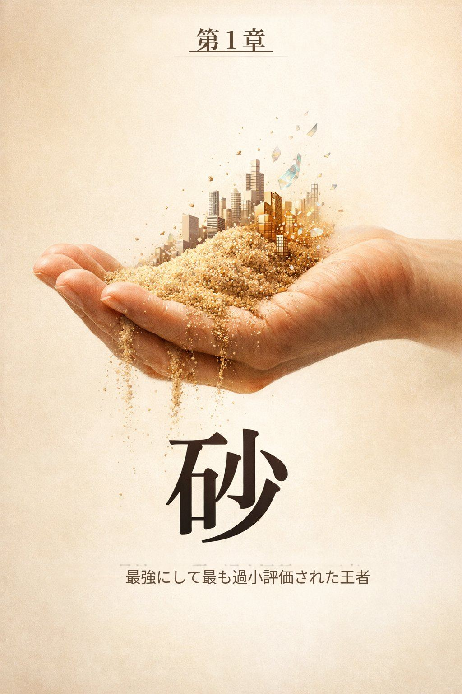
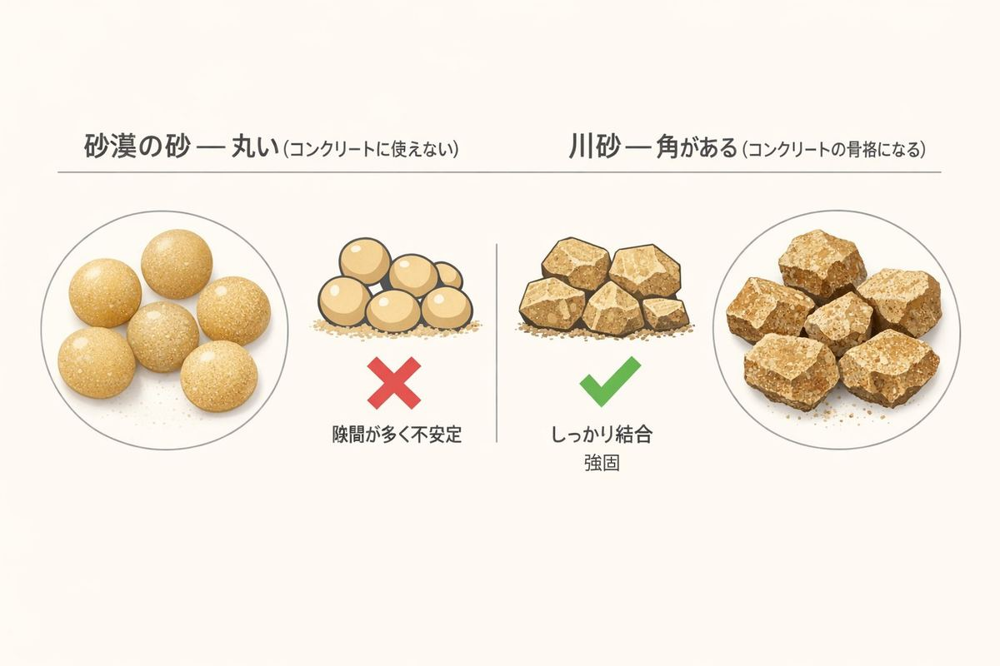
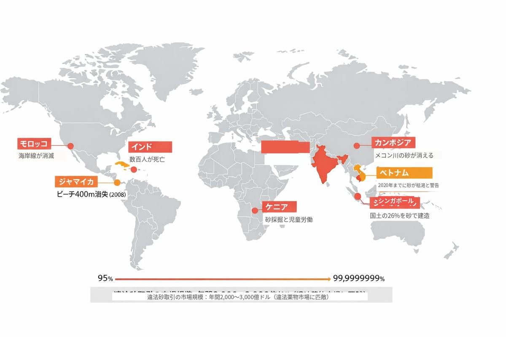
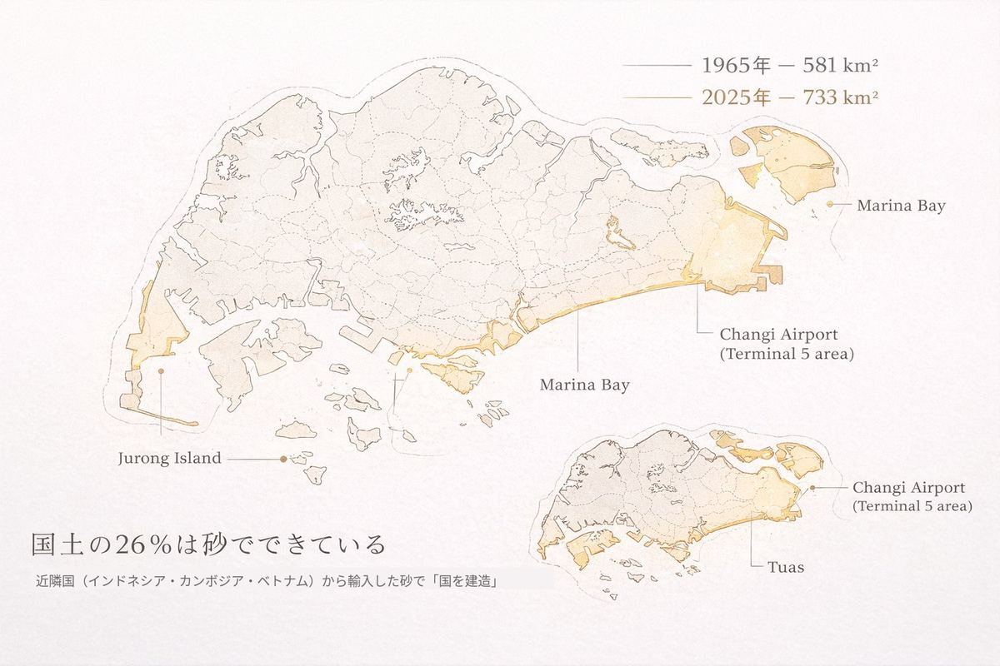
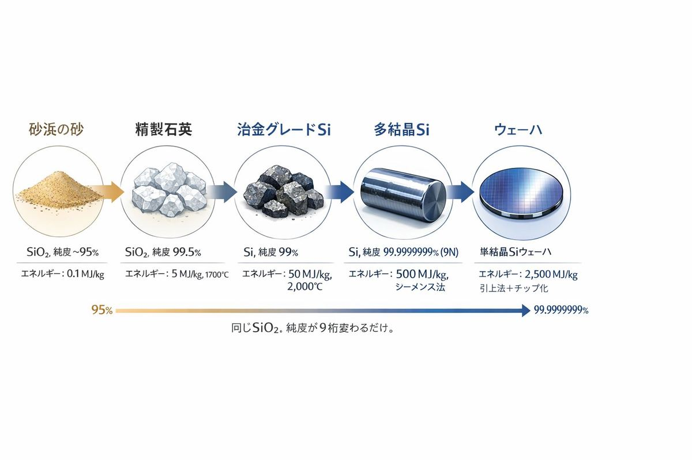
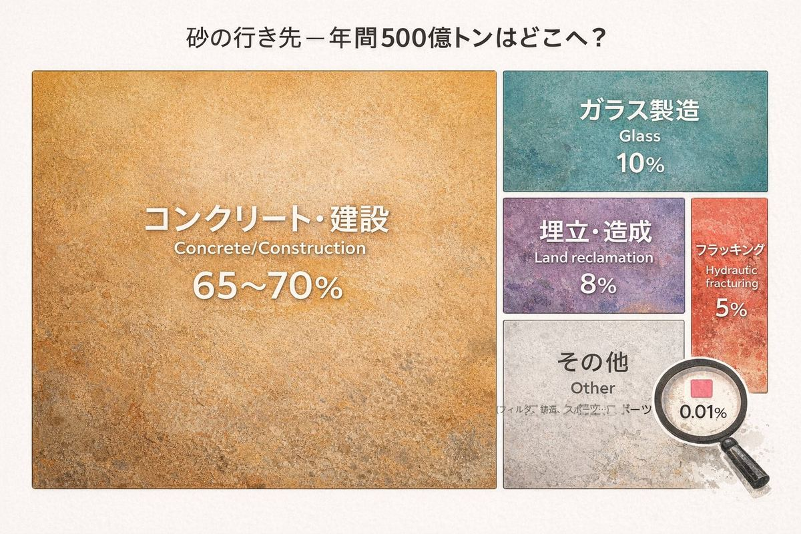

頬につたふ涙のごはず一握の砂を示しし人を忘れず ── 石川啄木『一握の砂』
A. コンクリート B. 鉄 C. 砂
正解はC。年間およそ500億トン。
国連環境計画（UNEP）はこの量を「地球をぐるりと囲む9階建ての壁を毎年1本作れる量」と表現した。2位のコンクリート（140億トン）も、3位の石炭（80億トン）も、遠く及ばない。しかも、そのコンクリートの骨材の6〜7割は砂と砂利だ。つまり砂は「1位であり、かつ2位の原料でもある」という二重王者である。
この事実を知っている人は驚くほど少ない。
ドバイに行ったことがあるだろうか。見渡す限りの砂漠。世界一の高さを誇るブルジュ・ハリファ、人工島パーム・ジュマイラ。その全てがコンクリートでできている。つまり、砂でできている。
ところがドバイは砂を輸入している。オーストラリアから。
なぜ目の前に砂漠があるのに、地球の裏側から砂を持ってくるのか。答えは「粒の形」にある。

砂漠の砂は、何万年も風に吹かれて角が取れ、つるつるに丸くなっている。ビー玉を積み上げても崩れるように、丸い砂はセメントと噛み合わない。コンクリートに使えるのは、川底や海底で水流に削られた「角のある砂」だけだ。
同じSiO₂（二酸化ケイ素）なのに、風で丸くなったか水で角張ったかで、使えるかどうかが決まる。素材の世界では、化学組成よりも物理的な形状がすべてを支配することがある。
2008年、カリブ海に浮かぶ島国ジャマイカで事件が起きた。コーラル・スプリングスというビーチから、一夜にして400メートルにわたる砂浜が消えた。トラック500台分。砂が、盗まれたのだ。
これは映画のプロットではない。「砂マフィア」と呼ばれる犯罪組織の仕業だ。
インドでは砂をめぐって数百人が命を落としている。モロッコでは海岸線がまるごと削り取られ、元ビーチだった場所が岩盤むき出しの崖になった。インドネシアのリアウ州では、合法的な海砂採掘の時代に23の島が消滅した。島ごと、消えた。

世界の違法砂取引の市場規模は年間2,000億〜3,000億ドル。これは違法薬物市場に匹敵する規模だ。砂が、コカインと同じ値段で取引されている。
なぜここまでの事態になったのか。理由は単純で、人類がインフラを作りすぎているからだ。
ストックホルム・レジリエンスセンターの研究チームが2025年に発表した数字は衝撃的だ。
「現在のペースでは、人類は5日に1回、パリ1個分の建造物を建てている。」
1ギガトン（10億トン）のブロック図で示されたその研究によれば、人工物の総質量はすでに地球上のすべての生物の総質量（バイオマス）を超えた。木も、草も、動物も、微生物も、全部足した重さより、人間が作ったコンクリートと鉄とアスファルトの方が重い。
そしてその人工物の骨格は、ほぼすべて砂でできている。
砂の需要が最も極端な形で現れた場所がある。シンガポールだ。

建国以来、この都市国家は砂を使って国土そのものを拡張してきた。海底から砂を浚渫し、海を埋め立て、文字通り「国土を製造」している。国土面積は独立時の581km²から現在の733km²まで増えた。約26%の増加。つまりシンガポールの国土の4分の1は、砂でできている。
問題は、その砂がどこから来たかだ。カンボジア、ベトナム、ミャンマー、インドネシア。東南アジアの近隣諸国から大量に買い付け、各国の河川や海岸線を破壊した。
国境線が砂で書き換えられる。これは比喩ではなく、物理的な事実だ。
ここまで読んで、砂がなぜ「王者」なのか腑に落ちただろうか。答えはエネルギーにある。砂の製造エネルギーは0.1 MJ/kg。「製造」というより「掘り出す」と言ったほうが正確で、ほぼゼロに近い。
| 素材 | 製造エネルギー (MJ/kg) |
|---|---|
| 砂・砕石 | 0.1 |
| 木材 | 3 |
| レンガ | 5 |
| セメント | 5 |
| ガラス | 15 |
| 鉄鋼 | 25 |
| プラスチック | 80 |
| アルミニウム | 170 |
| 半導体シリコン | 2,500 |
砂が年間500億トンも消費できる理由は、圧倒的に加工が簡単で安いからだ。掘って、運んで、混ぜる。それだけ。
そして面白いことに、この表の一番下にいる半導体シリコンも、元を辿れば同じSiO₂だ。

砂を2,500倍のエネルギーと12段階の工程をかけて精錬し、純度を99.9999999%（ナインナイン）まで高めると、あなたのスマートフォンの頭脳になる。同じ砂が、道路の下敷きにもなれば、AIチップにもなる。純度が9桁変わるだけで。

人類の歴史は「何を加工できるか」で時代が区分されてきた。石器時代、青銅器時代、鉄器時代。私たちは今、何時代にいるのだろうか。
「情報時代」「シリコン時代」という答えが一般的だ。しかし素材の消費量で見ると、答えは変わる。21世紀の今、重量ベースで人類が最も多く消費しているのは砂と砕石だ。私たちは石の時代に戻りつつある。
ただし、石器時代の人類が石を「拾って使った」のに対し、現代の人類は砂を「世界中から強奪して使っている」。その規模は、自然が補給できるスピードの3倍。50年後には枯渇の可能性すら囁かれている。
水の次に多く使う物質が、なくなるかもしれない。そのことを、ほとんどの人が知らない。
石川啄木は砂を手のひらに載せて、涙の重さと比べた。
今日の私たちが一握の砂を手に載せるとき、そこに載っているのは：
砂は美しく、砂は安く、砂はどこにでもある。
そう思っていた時代が、終わろうとしている。